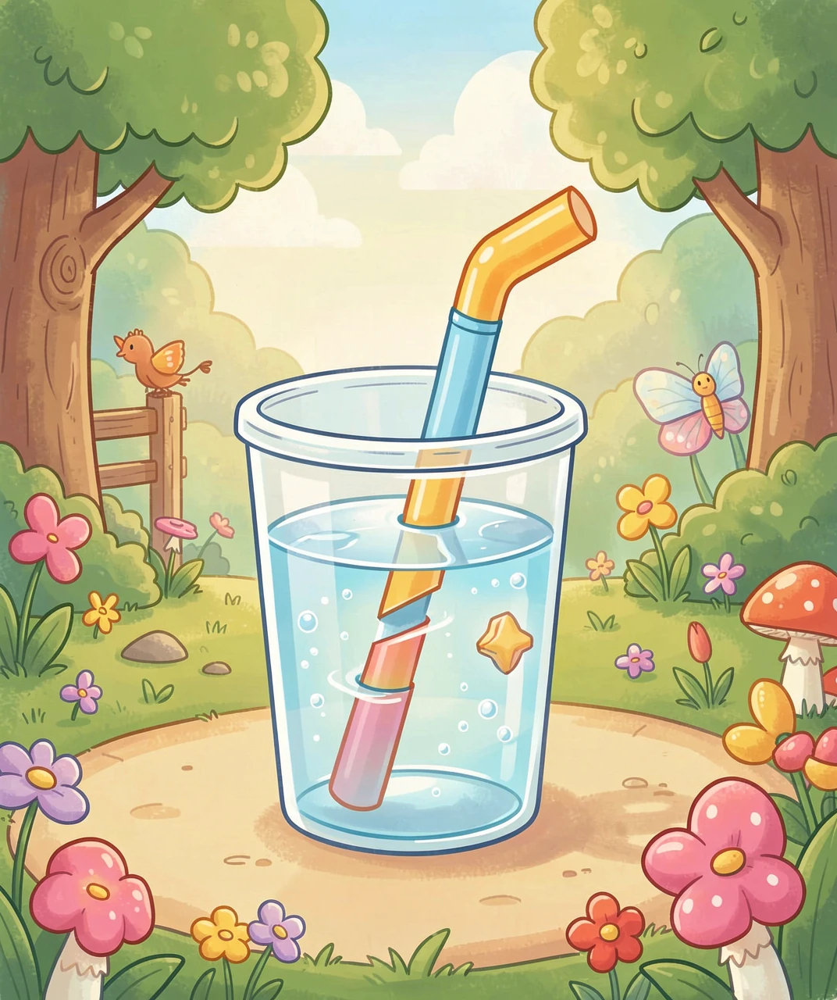
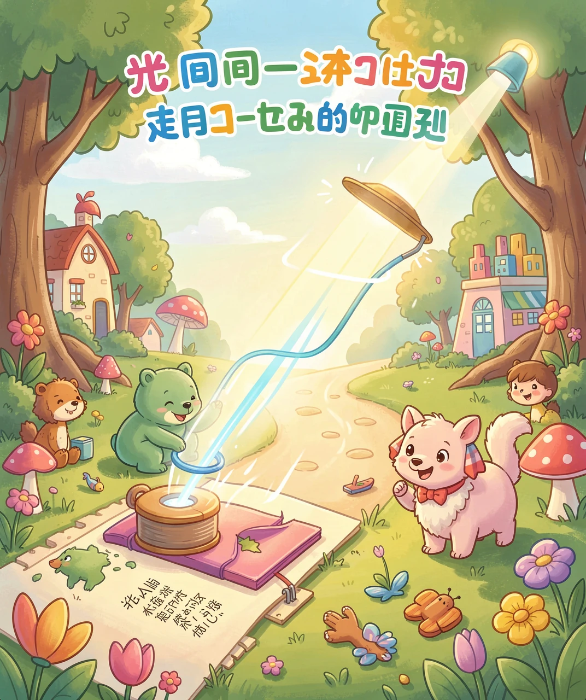
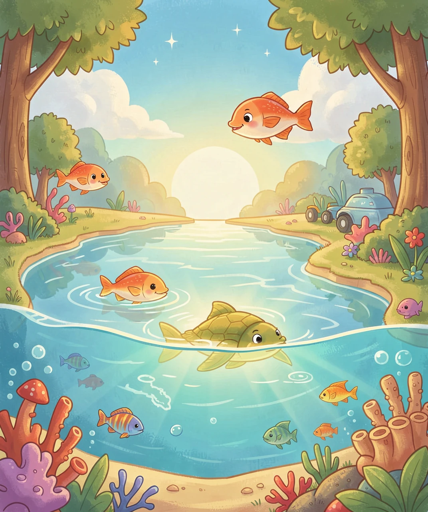
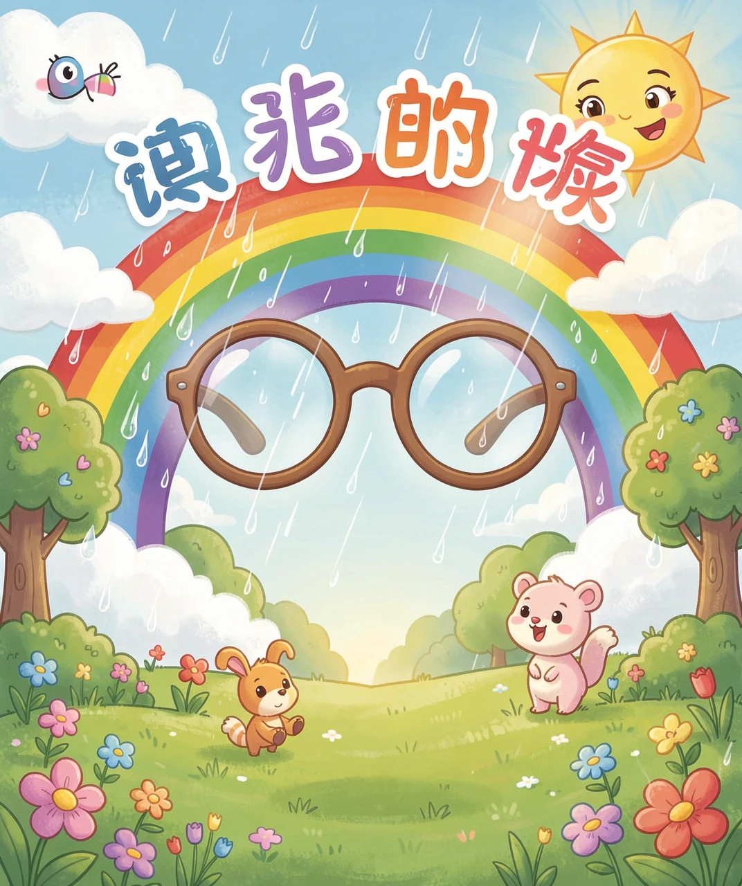
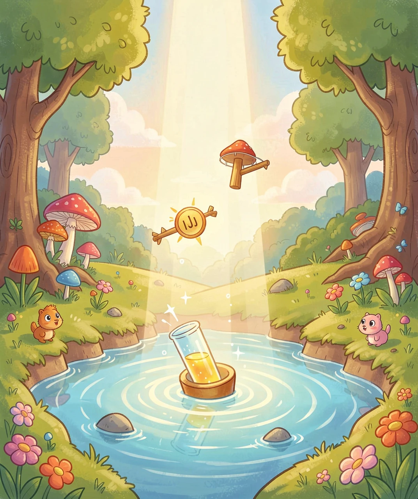

「变弯」的光，藏着大秘密
把一根吸管放进装了水的玻璃杯里，你会看到一个奇怪的现象：吸管看起来像是「断了」，水面上的部分和水面下的部分，好像错开了一截。再把手伸进水里，手也显得变短了、弯了。
可是把吸管拿出来一看，它明明还是好好的，一点没断。这是怎么回事呢？难道是我们的眼睛在骗我们？
其实，不是吸管断了，而是光在「捣鬼」。光从水里跑到空气里的时候，会拐弯，这个拐弯的现象，就叫做折射。因为光拐了弯，我们看到的吸管位置就「跑偏」了，所以看起来像是断了。今天，我们就来揭开这个「光变弯」的秘密。

要弄懂折射，我们先要知道光平时是怎么「走路」的。
光最喜欢走直线，而且它还是个「急性子」——它总是想用最短的时间，从起点赶到终点。在同一个东西里（比如一直在空气里、或者一直在水里），光会笔直地前进，因为直线就是最快的路。
可是，光在不同的东西里，跑得快慢是不一样的。它在空气里跑得快，到了水里就慢了下来，到了玻璃里更慢。我们把这个「跑得快慢」的本领，叫做光速。不同的材料，光速不同。
打个比方：光在空气里，像一个人在马路上飞快地跑；一进到水里，就像踩进了泥巴地，速度一下子慢了下来。

现在关键的问题来了：为什么光速一变慢，光就要拐弯呢？
我们可以把一束光想象成一支并排前进的小队伍，光的前面有好多「队员」。当这支队伍斜着从空气进入水里时，先碰到水面的那一侧的「队员」，会先踩进「泥巴地」，速度先慢下来；而另一侧的「队员」，还在空气里，跑得比较快。
这样一来，队伍两边一个快、一个慢，整个队伍就会「拐」一下，改变前进的方向。这就像你骑自行车，一个轮子先骑进了沙地，速度变慢，车头就会不自觉地偏一下。
所以，光会折射的根本原因就是：光从一种东西进入另一种东西时，速度改变了，方向就跟着改变了。速度变慢得越多，光拐得就越厉害。

折射可不只是让吸管「断掉」那么简单，它每天都在给我们「变魔术」。
下雨后，天上会出现美丽的彩虹，这就是折射的杰作。太阳光本来是白色的，但它里面藏着红、橙、黄、绿、蓝、靛、紫七种颜色。当阳光照进小水滴时，不同颜色的光拐弯的程度不一样，七种颜色就被「分开」了，于是我们就看到了彩虹。
你戴的眼镜，也是靠折射工作的。近视眼镜用凹透镜，让光散开一点，帮近视的人看清楚远处；老花眼镜用凸透镜，把光聚起来。还有放大镜、显微镜、望远镜、照相机镜头，全都利用了光的折射。
可以说，没有折射，就没有眼镜，也没有彩虹，我们看世界的方式会完全不一样。

回到我们最初的问题：光为什么会在水里折射？现在你应该能自己回答了——因为光在空气和在水里的速度不一样，当它斜着穿过水面时，速度突然改变，方向就跟着拐弯了。
其实，不只是水，光进入玻璃、进入油、进入任何「光速不同」的东西，都会折射。水只是我们最常见、最容易观察到的例子。
如果你想让光不折射，也有办法：让光垂直地照进水面。这时候，整支光队伍是「正着」踩进水里的，两边同时变慢，就不会拐弯。所以，垂直射入的光，会直直地穿过水面，不改变方向。
下次你再看到水里的吸管「断掉」、或者雨后的彩虹，就可以骄傲地告诉别人：这是光的折射！是光速改变引起的「拐弯」。

（答案：B、B、B、A、B。你都答对了吗？）